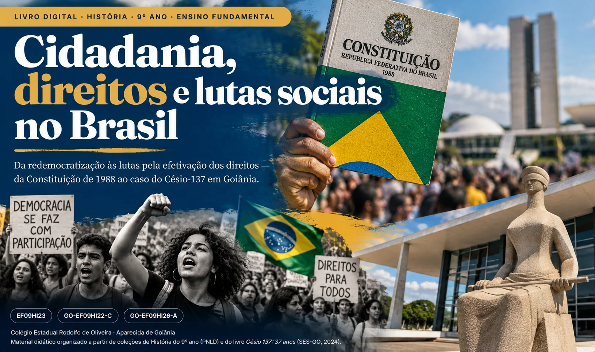
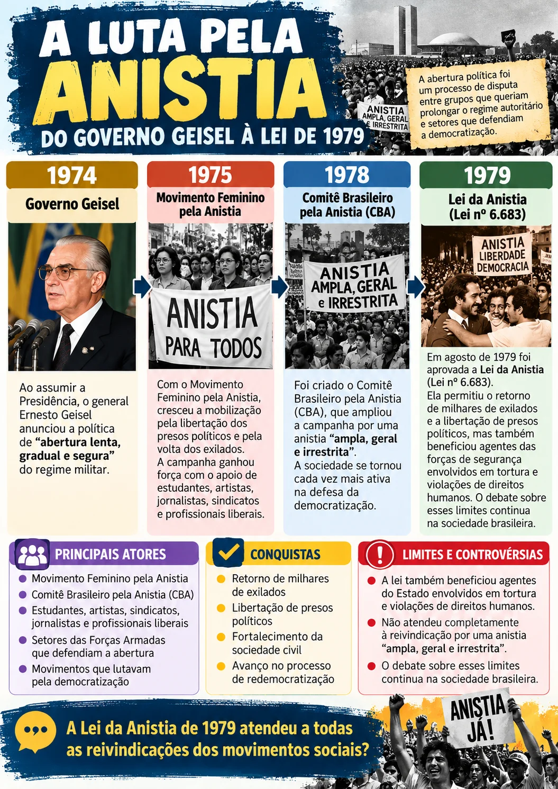
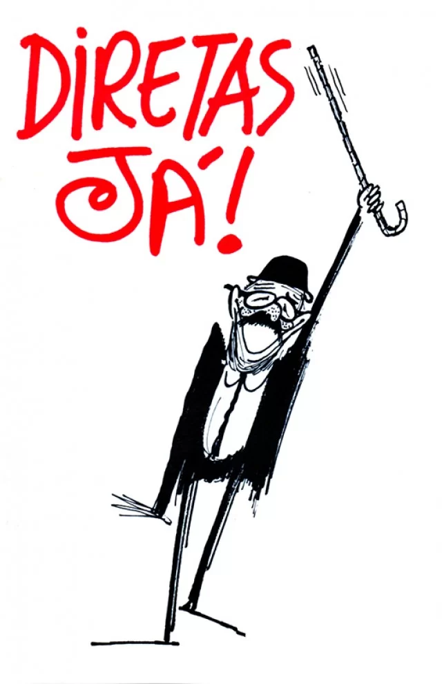
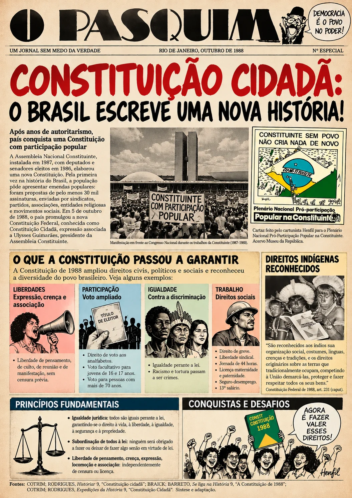
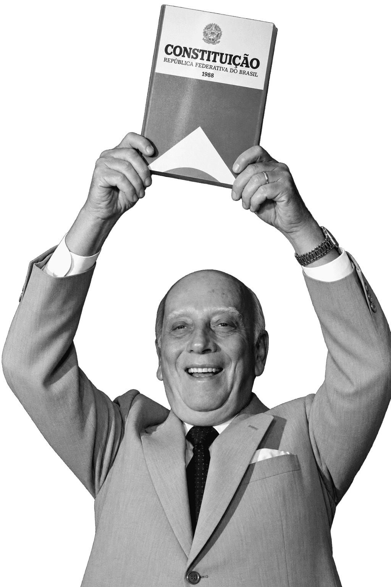
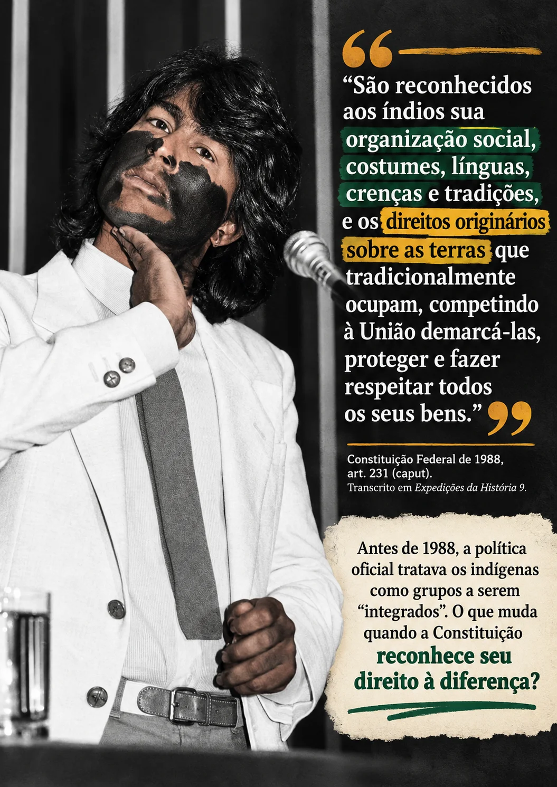
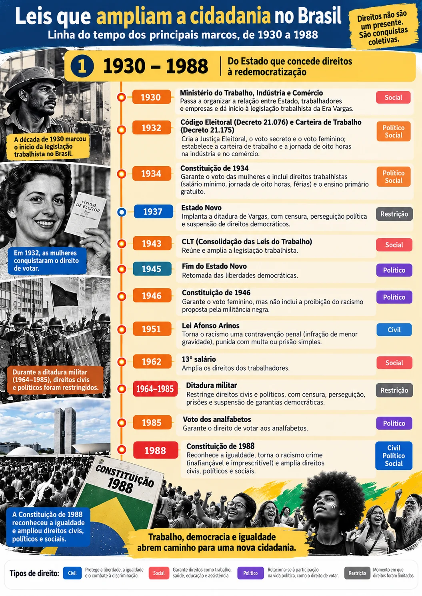

Cidadania, direitos e lutas sociais no Brasil — História, 9º ano

Antes de começar
Habilidades e objetivos
O que você vai desenvolver e aprender ao longo do livro.
Habilidades em foco
DC-GO Ampliado e Matriz de Habilidades Essenciais
| DC-GO — Ampliado | Matriz de Habilidades Essenciais |
|---|---|
| (EF09HI23) Identificar direitos civis, políticos e sociais expressos na Constituição de 1988 e relacioná-los à noção de cidadania e ao pacto da sociedade brasileira de combate a diversas formas de preconceito, como o racismo. | Compreender os diferentes direitos previstos na Constituição de 1988, conectando-os à prática da cidadania e à participação social. Entender o termo “Constituição Cidadã” e refletir criticamente sobre os desafios na efetivação desses direitos atualmente. |
| (GO-EF09HI22-C) Conhecer e analisar o acidente com o Césio-137 em Goiânia e sua relação com a promoção da cidadania individual e coletiva, bem como as suas repercussões no contexto local, nacional e internacional. | Identificar as causas e o contexto histórico do acidente com o Césio-137 em Goiânia, analisando as consequências sociais, ambientais, sanitárias e econômicas. |
| (GO-EF09HI26-A) Conhecer e problematizar as lutas por igualdade de direito de populações marginalizadas, suas especificidades, discutindo as políticas públicas afirmativas que visam erradicar todo e qualquer tipo de violência contra negros, indígenas, mulheres, homossexuais, diversidades sexuais, povos da terra, das águas, das florestas, camponeses, sem terra e teto, ciganos, deficientes e outras minorias. | Analisar os movimentos sociais e as estratégias de resistência e organização desses grupos, avaliando o conceito de políticas públicas afirmativas e seus objetivos na promoção da igualdade e da justiça social. |
- como a redemocratização ampliou os espaços de participação política;
- por que a Constituição de 1988 ficou conhecida como “Constituição Cidadã”;
- como direitos civis, políticos e sociais se relacionam com a cidadania;
- por que o acidente com o Césio-137 em Goiânia pode ser estudado sob a perspectiva da cidadania;
- como diferentes grupos sociais organizaram lutas por direitos;
- o que são políticas públicas, equidade e ações afirmativas.
Para começar
Por que estudar cidadania?
Direitos não nascem prontos: são escritos, disputados, ampliados — e, muitas vezes, ainda precisam ser conquistados na prática.
A cidadania não se resume ao direito de votar. Ela envolve direitos, deveres, participação social e a possibilidade de cada pessoa atuar na sociedade. No Brasil, sua construção foi marcada por avanços, conflitos, desigualdades e mobilizações coletivas.
Nas últimas décadas do século XX, a sociedade brasileira viveu um processo de redemocratização que alterou profundamente a vida política do país. As campanhas pela anistia, o movimento pelas eleições diretas e a participação popular na elaboração da Constituição de 1988 fizeram parte dessa história. É nesse mesmo contexto — setembro de 1987 — que Goiânia viveu o maior acidente radiológico do mundo, um episódio que também nos obriga a perguntar o que significa ter direito à informação, à saúde e à proteção do Estado.
O que é cidadania?
Cidadania é o conjunto de direitos e deveres que permite a uma pessoa participar da vida em sociedade com liberdade, igualdade e respeito.
O historiador José Murilo de Carvalho explica que ela tem três dimensões:
- Direitos civis: a vida, a liberdade, a igualdade perante a lei, o direito de ir e vir, de pensar e de se expressar.
- Direitos políticos: participar do governo da sociedade — votar, ser votado, organizar partidos e manifestações.
- Direitos sociais: participar da riqueza coletiva — educação, trabalho, saúde e aposentadoria.
Quem tem os três é um cidadão pleno; quem tem apenas alguns é um cidadão incompleto.
Ideia-chave: ter um direito não garante os outros. Poder votar, por exemplo, não garante emprego, saúde ou segurança. Por isso a cidadania se constrói aos poucos, com leis, educação e muita participação.
Fonte: CARVALHO, José Murilo de. Cidadania no Brasil: o longo caminho. 3. ed. Rio de Janeiro: Civilização Brasileira, 2002, introdução, p. 7–11 (adaptado). Ver bibliografia.
Brasil contemporâneo · 1974–1985
Da abertura política à redemocratização
Como a sociedade civil, as ruas e as urnas transformaram o fim da ditadura em um processo político.
Em 1974, ao assumir a Presidência, o general Ernesto Geisel anunciou uma política de abertura “lenta, gradual e segura”. A distensão era controlada pelo próprio regime, mas encontrou uma sociedade cada vez mais disposta a reivindicar mudanças: sindicatos, estudantes, artistas, setores da Igreja, jornalistas e profissionais liberais ampliaram suas vozes. A abertura foi um processo de disputa entre grupos que queriam prolongar o regime autoritário e setores que defendiam a democratização.
A luta pela anistia

A partir de 1975 — com o Movimento Feminino pela Anistia — e, sobretudo, de 1978, com o Comitê Brasileiro pela Anistia (CBA), cresceu a campanha por uma anistia “ampla, geral e irrestrita”. Pedia-se a libertação dos presos políticos e a volta dos exilados. O governo, porém, resistia a anistiar os que haviam participado da luta armada.
Em agosto de 1979 foi aprovada a Lei da Anistia (Lei nº 6.683). Ela permitiu o retorno de milhares de exilados e a libertação de presos políticos, mas foi muito criticada por seus limites: a lei também beneficiou agentes das forças de segurança envolvidos em tortura e violações de direitos humanos. O debate sobre esses limites continua na sociedade brasileira.
Diretas Já

Com a crise econômica do início dos anos 1980 — inflação alta e dívida externa —, a insatisfação com o regime cresceu. Em 1983, partidos de oposição, sindicatos, entidades civis e artistas lançaram a campanha pelas eleições diretas para presidente. Em 25 de janeiro de 1984, na Praça da Sé, em São Paulo, um grande comício deu início a uma sequência de manifestações. No Rio de Janeiro, o comício da Candelária (10 de abril de 1984) chegou a ser descrito como a maior manifestação político-popular da história do país até então.
“Um, dois, três, quatro, cinco, mil, queremos eleger o presidente do Brasil.”
Em 25 de abril de 1984, a Câmara dos Deputados votou a Emenda Dante de Oliveira, que restabeleceria as eleições diretas. A emenda não obteve os votos necessários e foi rejeitada. A eleição presidencial ocorreu, em janeiro de 1985, de forma indireta, pelo Colégio Eleitoral: Tancredo Neves venceu, mas adoeceu na véspera da posse e morreu em 21 de abril. José Sarney, vice-presidente eleito, assumiu a Presidência e inaugurou a chamada “Nova República”.
- 1974Início da “abertura lenta, gradual e segura”Governo Geisel; avanço da oposição nas eleições legislativas de 1974.
- 1979Lei da AnistiaRetorno de exilados e libertação de presos políticos, com limites criticados.
- 1983–84Campanha das Diretas JáComícios multitudinários; derrota da Emenda Dante de Oliveira (abril de 1984).
- 1985Eleição indireta e Nova RepúblicaTancredo é eleito pelo Colégio Eleitoral; Sarney assume a Presidência.
1987–1988
A Constituição de 1988
Uma Constituição escrita em meio a debates, emendas populares e disputas — e chamada de “Cidadã”.

A Assembleia Nacional Constituinte foi instalada em 1987, com deputados e senadores eleitos em novembro de 1986, para elaborar uma nova Constituição. Esperava-se completar, com ela, a transição democrática. Pela primeira vez na história constitucional brasileira, a população pôde apresentar emendas populares: as propostas precisavam de pelo menos 30 mil assinaturas e deviam ser apresentadas por alguma entidade — sindicatos, partidos, associações, entidades religiosas. Assim, grupos à direita e à esquerda mobilizaram-se, coletaram assinaturas e levaram suas reivindicações ao Congresso.
Em 5 de outubro de 1988 foi promulgada a nova Constituição Federal. Por ampliar os direitos civis, políticos e sociais e por ter contado com participação popular, ficou conhecida como Constituição Cidadã — expressão associada a Ulysses Guimarães, presidente da Assembleia Constituinte.
Documento histórico · 5 de outubro de 1988 A Constituição Cidadã nas palavras de Ulysses Guimarães Ouça o áudio original do discurso de promulgação e acompanhe a transcrição, frase por frase. Abrir página ↗
A expressão destaca a ampliação das garantias individuais e sociais e a retomada dos direitos políticos depois de anos de autoritarismo. “Cidadã” não significa que todos os direitos já eram plenamente exercidos em 1988, mas que o texto os reconheceu e abriu caminhos para cobrá-los.
O que a Constituição passou a garantir
Expressão, crença e associação
Liberdade de pensamento, de culto, de reunião e de manifestação, sem censura prévia.
Voto ampliado
Direito de voto aos analfabetos e voto facultativo para jovens de 16 e 17 anos e para pessoas com mais de 70 anos.

“São reconhecidos aos índios sua organização social, costumes, línguas, crenças e tradições, e os direitos originários sobre as terras que tradicionalmente ocupam, competindo à União demarcá-las, proteger e fazer respeitar todos os seus bens.”
Antes de 1988, a política oficial tratava os indígenas como grupos a serem “integrados”. O que muda quando a Constituição reconhece seu direito à diferença?
| Direito | O que podemos compreender? | Exemplo cotidiano |
|---|---|---|
| Educação | Direito social e responsabilidade pública. | Matrícula gratuita na escola pública. |
| Saúde | Integra o conjunto de direitos sociais garantidos constitucionalmente. | Atendimento em unidades de saúde do SUS. |
| Liberdade | Liberdades individuais e coletivas recebem proteção jurídica. | Expressar opiniões e professar uma religião. |
| Igualdade | A lei estabelece a igualdade e combate práticas discriminatórias. | Racismo é crime inafiançável e imprescritível. |
| Participação política | O sistema democrático reconhece o voto e outros mecanismos de cidadania. | Votar, participar de conselhos e de associações. |
Cidadania
Direitos garantidos e desafios de efetivação
Entre o que está escrito na lei e o que se vive na prática existe uma distância que a História ajuda a explicar.
A Constituição estabelece direitos, mas a história mostra que existe uma diferença entre reconhecer um direito e garantir que ele seja efetivamente exercido por toda a população. Desigualdades econômicas, sociais, territoriais e formas de preconceito podem limitar o acesso a direitos.
Três dimensões da cidadania
Liberdade e igualdade perante a lei
Liberdades individuais, igualdade jurídica e proteção da pessoa (vida, expressão, propriedade, ir e vir).
Participação na vida pública
Votar, ser votado, organizar partidos, sindicatos e associações.
Condições para uma vida digna
Educação, saúde, trabalho, moradia, previdência — dependem de políticas públicas.
Reconhecer desigualdades não significa afirmar que todos os grupos tenham exatamente a mesma experiência. A análise histórica procura identificar como diferentes condições sociais produzem diferentes possibilidades de acesso a direitos.
Leis que ampliam a cidadania
Em Cidadania no Brasil: o longo caminho, José Murilo de Carvalho (2002) mostra que, no Brasil, muitos direitos chegaram “de cima para baixo”: foram concedidos pelo Estado em momentos em que a participação popular era limitada, como aconteceu com os direitos trabalhistas na década de 1930. Disso nasceu o que o autor chama de estadania, uma cultura “orientada mais para o Estado do que para a representação”: o governo é visto como um distribuidor de favores e de benefícios, e não como algo que os cidadãos escolhem, fiscalizam e cobram. A cidadania plena, ao contrário, depende da participação e da organização da sociedade.
Mas essa não é a história completa. A pesquisadora Evelina Dagnino (1994) defende que, a partir das décadas de 1970 e 1980, os movimentos sociais de grupos excluídos, como o movimento negro, o movimento de mulheres e os movimentos populares das periferias, construíram uma nova cidadania. Em vez de esperar que os direitos fossem concedidos, essas pessoas passaram a lutar pelo “direito a ter direitos”: exigiram que suas necessidades fossem reconhecidas como direitos e que elas próprias participassem das decisões. Os dois autores ajudam a entender que a cidadania não é um presente do Estado, e sim uma conquista coletiva.
Essa luta atravessa a história do país. Durante a ditadura militar, direitos civis e políticos foram restringidos; com a redemocratização, a sociedade voltou a se organizar e participou da elaboração da Constituição de 1988, que reconheceu a igualdade e criou instrumentos para combater o preconceito. Depois dela, outras leis detalharam esses direitos para grupos que historicamente sofreram exclusão, como populações negras, indígenas, mulheres, pessoas LGBTQIA+, pessoas com deficiência, camponeses e populações pobres. Conhecer essas leis ajuda a perceber que a cidadania é uma conquista em constante construção.
O caminho da criminalização do racismo
Na década de 1940, a militância negra — como a de Abdias do Nascimento, diretor do jornal Quilombo (1948) — propôs incluir na Constituição de 1946 um dispositivo que proibisse o racismo; a proposta não foi aprovada. Em 1951, por pressão dos movimentos negros e depois de episódios de discriminação de grande repercussão, aprovou-se a Lei Afonso Arinos, que tornou a prática do racismo uma contravenção penal, isto é, uma infração de menor gravidade, punida com multa ou prisão simples.
Só com a Constituição de 1988 o racismo passou a ser crime, sujeito à pena de prisão. Hoje, ele é inafiançável e imprescritível: o acusado não pode pagar fiança para responder em liberdade e o crime não “vence” com o passar do tempo. A Lei Caó (1989) definiu os crimes de preconceito de raça ou de cor e, em 2023, a injúria racial passou a ser tratada como crime de racismo. O Estatuto da Igualdade Racial (2010) e a Lei de Cotas (2012) completam esse conjunto, ao estabelecer políticas públicas de valorização e de acesso da população negra à educação e ao trabalho.
Direitos de grupos específicos
A igualdade prevista na Constituição precisou ser detalhada em leis específicas, porque nem todos os grupos enfrentam as mesmas barreiras. O Estatuto da Criança e do Adolescente (1990) reconheceu crianças e jovens como pessoas com direitos próprios. O Estatuto do Idoso (2003), hoje chamado Estatuto da Pessoa Idosa, e o Estatuto da Pessoa com Deficiência (2015) estabeleceram obrigações do Estado e da sociedade para que essas pessoas exerçam plenamente a cidadania. A Lei Maria da Penha (2006) e a Lei do Feminicídio (2015) enfrentam a violência contra as mulheres, e as leis 10.639 (2003) e 11.645 (2008) levaram a história afro-brasileira e indígena para as escolas.

Clique para abrir o carrossel (1930 a 2025)Direitos políticos e sociais: um processo contínuo
Outros direitos também foram ampliados aos poucos. O voto dos analfabetos só foi garantido em 1985, e a Constituição de 1988 estendeu o voto facultativo aos jovens de 16 e 17 anos. No campo social, a CLT (1943), o 13º salário (1962) e o SUS (1990) mostram como direitos do trabalho e da saúde foram sendo incorporados. Mesmo depois de escritos em lei, esses direitos precisam ser exercidos na prática, e por isso novas leis continuam sendo aprovadas, como as de 2023 e 2025 indicadas na tabela.
Linha do tempo dos direitos, de 1930 a 2025
A tabela reúne as principais leis, emendas e decisões que ampliaram direitos no Brasil desde a década de 1930, em ordem cronológica. Não é uma lista completa, mas uma seleção dos marcos mais importantes. Os tipos de direito indicam a classificação principal de cada norma, e a etiqueta “Restrição” marca um momento em que direitos foram limitados.
| Ano | Lei ou decisão | O que garante | Tipo de direito |
|---|---|---|---|
| 1930–1939 | |||
| 1930 | Ministério do Trabalho, Indústria e Comércio | Passa a organizar a relação entre Estado, trabalhadores e empresas e dá início à legislação trabalhista da Era Vargas. | Social |
| 1932 | Código Eleitoral (Decreto 21.076) e Carteira de Trabalho (Decreto 21.175) | Cria a Justiça Eleitoral, o voto secreto e o voto feminino; estabelece a carteira de trabalho e a jornada de oito horas na indústria e no comércio. | PolíticoSocial |
| 1934 | Constituição de 1934 | Garante o voto das mulheres e inclui direitos trabalhistas (salário mínimo, jornada de oito horas, férias) e o ensino primário gratuito. | PolíticoSocial |
| 1937 | Constituição de 1937 (Estado Novo) | Fecha o Congresso e os partidos e restringe as liberdades; os direitos do trabalho são mantidos, mas concedidos “de cima para baixo”. | RestriçãoSocial |
| 1940–1949 | |||
| 1940 | Salário mínimo (Decreto-Lei 2.162) | Fixa um valor mínimo para a remuneração do trabalho. | Social |
| 1943 | Consolidação das Leis do Trabalho — CLT (Decreto-Lei 5.452) | Reúne os direitos trabalhistas, como jornada, férias e carteira assinada. | Social |
| 1946 | Constituição de 1946 | Restabelece eleições diretas e liberdades individuais após o Estado Novo. | CivilPolítico |
| 1948 | Declaração Universal dos Direitos Humanos (ONU) | Afirma que todas as pessoas nascem livres e iguais em dignidade e direitos. | CivilPolíticoSocial |
| 1950–1969 | |||
| 1951 | Lei Afonso Arinos (Lei 1.390) | Torna a discriminação racial uma contravenção penal. | Civil |
| 1962 | Estatuto da Mulher Casada (Lei 4.121) e 13º salário (Lei 4.090) | A mulher casada deixa de ser considerada relativamente incapaz; cria-se o 13º salário. | CivilSocial |
| 1963 | Estatuto do Trabalhador Rural (Lei 4.214) | Estende direitos trabalhistas aos trabalhadores do campo. | Social |
| 1970–1979 | |||
| 1977 | Lei do Divórcio (Lei 6.515) | Permite o divórcio e a formação de novas famílias. | Civil |
| 1979 | Lei da Anistia (Lei 6.683) | Permite o retorno de exilados e a libertação de presos políticos, com limites criticados. | CivilPolítico |
| 1980–1989 | |||
| 1985 | Emenda Constitucional 25 | Garante o voto aos analfabetos e restabelece as eleições diretas para presidente. | Político |
| 1988 | Constituição Federal | Amplia direitos civis, políticos e sociais; racismo vira crime inafiançável e imprescritível; voto facultativo aos 16 anos. | CivilPolíticoSocial |
| 1989 | Lei Caó (Lei 7.716) | Define os crimes resultantes de preconceito de raça ou de cor. | Civil |
| 1990–1999 | |||
| 1990 | Estatuto da Criança e do Adolescente (Lei 8.069), SUS (Lei 8.080) e Código de Defesa do Consumidor (Lei 8.078) | Protegem crianças e adolescentes, organizam o atendimento público de saúde e defendem os consumidores. | CivilSocial |
| 1991 | Cotas para pessoas com deficiência (Lei 8.213) | Obriga empresas a reservar vagas de trabalho para pessoas com deficiência. | Social |
| 1993 | Lei Orgânica da Assistência Social (Lei 8.742) | Garante o Benefício de Prestação Continuada a idosos e pessoas com deficiência de baixa renda. | Social |
| 1996 | Lei de Diretrizes e Bases da Educação (Lei 9.394) | Organiza a educação brasileira e afirma o direito à educação básica. | Social |
| 1997 | Lei contra a tortura (Lei 9.455) | Define a tortura como crime. | Civil |
| 2000–2009 | |||
| 2000 | Emenda Constitucional 26 | Inclui a moradia entre os direitos sociais. | Social |
| 2003 | Estatuto do Idoso (Lei 10.741) e Lei 10.639 | Protege as pessoas idosas; torna obrigatório o ensino de história e cultura afro-brasileira. | CivilSocial |
| 2006 | Lei Maria da Penha (Lei 11.340) | Cria mecanismos para prevenir e punir a violência doméstica e familiar contra a mulher. | Civil |
| 2008 | Lei 11.645 | Inclui o ensino da história e da cultura indígena nas escolas. | Social |
| 2009 | Emenda Constitucional 59 | Torna a educação básica obrigatória dos 4 aos 17 anos. | Social |
| 2010–2019 | |||
| 2010 | Estatuto da Igualdade Racial (Lei 12.288) e Emenda Constitucional 64 | Cria políticas de valorização da população negra; inclui a alimentação entre os direitos sociais. | CivilSocial |
| 2011 | Lei de Acesso à Informação (Lei 12.527) e decisão do STF sobre união homoafetiva | Garante o acesso a informações públicas; o STF reconhece a união estável entre pessoas do mesmo sexo. | CivilPolítico |
| 2012 | Lei de Cotas nas universidades (Lei 12.711) | Reserva vagas nas instituições federais para estudantes de escolas públicas, negros, indígenas e pessoas com deficiência. | Social |
| 2013 | Emenda Constitucional 72 | Amplia os direitos das trabalhadoras e dos trabalhadores domésticos. | Social |
| 2014 | Marco Civil da Internet (Lei 12.965) | Define direitos e deveres no uso da internet, como a liberdade de expressão e a privacidade. | Civil |
| 2015 | Estatuto da Pessoa com Deficiência (Lei 13.146), Lei do Feminicídio (Lei 13.104) e Emenda Constitucional 90 | Promove a inclusão de pessoas com deficiência; pune o assassinato de mulheres por razões de gênero; inclui o transporte entre os direitos sociais. | CivilSocial |
| 2018 | Lei Geral de Proteção de Dados (Lei 13.709) | Protege os dados pessoais e a privacidade. | Civil |
| 2019 | Decisão do STF sobre homofobia | O STF enquadra a homofobia e a transfobia nos crimes de racismo, até que o Congresso aprove lei específica. | Civil |
| 2020–2026 | |||
| 2022 | Estatuto da Pessoa Idosa (Lei 14.423) | Atualiza o nome do Estatuto do Idoso, em linguagem mais inclusiva. | CivilSocial |
| 2023 | Leis 14.532, 14.611 e 14.723 | Injúria racial passa a ser crime de racismo; igualdade salarial entre mulheres e homens; revisão da Lei de Cotas. | CivilSocial |
| 2025 | Leis 15.142, 15.211 e 15.222 | Amplia cotas raciais em concursos federais (30%); protege crianças no ambiente digital (ECA Digital); amplia a licença-maternidade em casos de internação. | CivilSocial |
Fontes: CARVALHO, Cidadania no Brasil: o longo caminho (2002); DAGNINO, “Os movimentos sociais e a emergência de uma nova noção de cidadania” (1994); AZEVEDO; CALBENTE; SERIACOPI, A Conquista: História 9; COTRIM; RODRIGUES, Historiar 9, “Outras histórias”; BRASIL. Presidência da República e Câmara dos Deputados, base de legislação federal. Síntese e adaptação. Ver bibliografia.
Atividade · EF09HI23 · EF09HI25 · EF09HI26 Leis que ampliam a cidadania Dez questões de múltipla escolha sobre estadania e nova cidadania, a criminalização do racismo e as leis que protegem grupos específicos. Abrir atividade ↗Goiânia · Goiás · 1987
O acidente com o Césio-137
O maior acidente radiológico do mundo aconteceu em plena redemocratização — e revelou lacunas de fiscalização, informação e proteção.
Em 13 de setembro de 1987, dois jovens de 20 e 21 anos, Wagner Mota Pereira e Roberto Santos Alves, recolheram parte de um aparelho de radioterapia abandonado nas ruínas do antigo Instituto Goiano de Radioterapia (IGR), no centro de Goiânia. Pretendiam vender a peça a um ferro-velho e removeram o lacre da cápsula. Estava iniciado o maior acidente radiológico do mundo, classificado pela Comissão Nacional de Energia Nuclear (CNEN) como nível 5 em uma escala de 1 a 7.
A cápsula continha cloreto de césio-137, um pó que emitia uma luz azulada. Fascinados, parentes, vizinhos e amigos manipularam e distribuíram fragmentos do material. Sem saber o que era, muitas pessoas se contaminaram.
Por que o acidente aconteceu? A questão da responsabilidade
Em 1985, o IGR mudou de endereço e deixou para trás um aparelho de radioterapia considerado obsoleto, cuja fonte era de césio-137. A Secretaria de Saúde de Goiás e a CNEN afirmaram que não foram devidamente notificadas; o IGR, em sua defesa judicial, alegou ter notificado a CNEN. As ruínas puderam ser acessadas livremente.
Havia, além disso, um problema de organização do Estado. O Decreto nº 81.384/1978 transferira a fiscalização de fontes radioativas para as secretarias estaduais de Saúde e determinara que o Conselho Nacional de Saúde estabelecesse as normas de radioproteção. O Conselho, porém, ficou em recesso por seis anos, e as normas só foram retomadas em dezembro de 1988 — mais de um ano depois do acidente.
“A situação é absurda. Não existe ninguém responsável pela fiscalização dos aparelhos que utilizam elementos radioativos para fins medicinais.”
Observe: de que forma uma falha de fiscalização pública pode ameaçar o direito à saúde e à vida?
Do desconhecimento à descoberta
Nos dias seguintes, os fragmentos se espalharam por várias casas. Ivo Alves Ferreira, irmão do dono do ferro-velho, levou pó para casa; sua filha, Leide das Neves Ferreira, de 6 anos, brincou com a substância e comeu com as mãos sujas, tornando-se a pessoa mais afetada pela radiação. Os primeiros sintomas — náuseas, vômitos, tonturas, diarreia — foram tratados como doenças infecciosas, porque ninguém relacionava o mal-estar ao “pó brilhante”. Somente em 29 de setembro, quando funcionários da saúde estadual e um físico procuraram um aparelho para medir radioatividade, o acidente foi identificado.
- 1985Abandono do equipamentoO IGR muda de sede; o aparelho de radioterapia fica nas ruínas, acessível a qualquer pessoa.
- 13/09/1987Violação da fonteA cápsula é aberta em um ferro-velho; fragmentos são distribuídos a vizinhos e parentes.
- 29/09/1987Confirmação e notificaçãoO acidente é identificado, comunicado à CNEN e, depois, à Agência Internacional de Energia Atômica.
- 30/09/1987Chegada da CNENTécnicos com roupas e máscaras especiais percorrem a cidade; é necessário um intenso trabalho de informação para acalmar os moradores.
- Out./1987Operação Césio 137Isolamento de áreas, monitoramento da população, descontaminação; 41 casas evacuadas, 7 demolidas.
- 1997Depósito definitivoEm 5 de junho é inaugurado o depósito de rejeitos em Abadia de Goiás, com previsão de 300 anos para a perda da radioatividade.
Preconceito e solidariedade
Além do sofrimento físico, as vítimas enfrentaram estigma. Em 1987, na ocasião do enterro de Leide das Neves, mais de duas mil pessoas, temendo que o corpo contaminasse a área, tentaram impedir o sepultamento e bloquearam a rua com pedras e tijolos. A mãe de Leide só conseguiu se aproximar do caixão para a despedida graças à intervenção da primeira-dama do Estado, Sônia Santillo, que pediu à multidão: “deixem a mãe enterrar sua filha”. Goiânia e os goianos, em geral, passaram a ser vistos com medo e desconfiança em outras partes do país.
A resposta também veio por meio da solidariedade. No início de dezembro de 1987, autoridades, técnicos e jornalistas se uniram para anunciar que Goiânia estava livre da contaminação, e uma campanha nacional buscou resgatar a autoestima dos goianienses. A primeira bailarina do Teatro Municipal do Rio de Janeiro, Ana Maria Botafogo, apresentou um espetáculo no Teatro Goiânia contra a discriminação.
O acidente permite discutir responsabilidade pública, fiscalização, acesso à informação, proteção da população, discriminação contra grupos atingidos por uma tragédia e preservação da memória. Por isso pode ser relacionado à cidadania individual e coletiva — e ao tema central deste livro: direitos reconhecidos em lei só se efetivam quando o Estado e a sociedade atuam para garanti-los.
Cuidar, lembrar, prevenir
Para cuidar das vítimas foi criada a Fundação Leide das Neves Ferreira (FunLeide), baseada no acolhimento integral — apoio médico, de enfermagem, psicológico, odontológico e de assistência social. Em 1999 a fundação foi extinta e suas atribuições passaram a uma superintendência; hoje, o Centro Estadual de Assistência aos Radioacidentados Leide das Neves (CARA), da Secretaria de Estado da Saúde, mantém o monitoramento permanente dos radioacidentados e de seus descendentes, que atualmente estão na terceira geração.
O depósito de rejeitos de Abadia de Goiás, inaugurado em 5 de junho de 1997, recebeu cerca de 6 mil toneladas de material (tambores e caixas metálicas, entre outros recipientes) e permanece sob monitoramento. A tragédia deixou lições sobre fiscalização de fontes radioativas, comunicação de risco e atendimento integral à saúde — uma memória que, nas palavras da Secretaria de Saúde, funciona como “um memorial para a prevenção e a promoção da saúde”.
“Não quebrei portas ou janelas como disseram. Entrei [...] porque estava abandonada. Era final da tarde, com muito sol, e a peça era tão pesada que o carrinho entortou.”
Observe: o que o depoimento nos permite perceber sobre a forma como as pessoas simples foram vistas e julgadas logo após o acidente? Por que é importante ouvir diferentes versões de um mesmo fato?
Complete o quadro com base no que você estudou:
| Dimensão | O que devemos observar? | Registre um exemplo |
|---|---|---|
| Social | Relações entre pessoas e comunidades; preconceito e solidariedade. | |
| Sanitária | Consequências para a saúde e atendimento às pessoas. | |
| Ambiental | Contaminação, descontaminação e destino dos rejeitos. | |
| Econômica | Impactos sobre bens, moradias e atividades. | |
| Cidadania | Direitos, informação, proteção e responsabilidade pública. |
Questão final: em sua opinião, que direitos da Constituição de 1988 teriam relação direta com o acidente? Justifique.
Sociedade civil
Lutas sociais e organização coletiva
Os direitos que hoje reconhecemos foram, em grande parte, arrancados por mobilizações coletivas.
A conquista de direitos não aconteceu apenas por decisões tomadas dentro das instituições. Em diferentes momentos, grupos sociais organizaram movimentos, campanhas, associações e sindicatos para apresentar reivindicações e disputar espaço na sociedade. Entre os grupos que historicamente enfrentaram exclusão ou violência estão negros, indígenas, mulheres, pessoas LGBTQIA+, pessoas com deficiência, camponeses e pobres.
Movimentos sociais são formas de organização coletiva que apresentam reivindicações, defendem interesses, questionam situações existentes e buscam transformações sociais ou políticas.
Como uma luta por direitos pode se organizar?
Três exemplos para comparar
Contra o racismo
Imprensa negra, entidades e militantes como Abdias do Nascimento pressionaram por leis antidiscriminatórias, até que a Constituição de 1988 tornou o racismo crime.
Terra e reforma agrária
Das Ligas Camponesas ao Movimento dos Trabalhadores Rurais Sem Terra (MST), criado em 1984, a luta é por distribuição de terras e acesso a direitos trabalhistas no campo.
Direito à diferença
Mobilizados na Constituinte, conquistaram o reconhecimento de sua organização social, de suas línguas e do direito originário sobre as terras tradicionais (art. 231).
- Escolha um grupo social ou movimento.
- Qual problema ou desigualdade está no centro de sua atuação?
- Que direito está relacionado à reivindicação?
- Quais estratégias de organização podem ser identificadas?
- Que mudança social ou política foi reivindicada? Ela foi conquistada?
Igualdade e justiça social
Equidade e ações afirmativas
Tratar todos do mesmo jeito basta quando as pessoas partem de condições muito diferentes?
Quando observamos desigualdades históricas, surge uma questão importante: tratar todas as pessoas exatamente da mesma maneira é suficiente para produzir igualdade de oportunidades? A equidade parte da ideia de “igualdade de direitos de aprender”: reconhecer que as necessidades das pessoas são diferentes e que é responsabilidade coletiva garantir formas eficientes de atender a todos, “a fim de que ninguém fique para trás”.
As pessoas têm os mesmos direitos e são tratadas pelas mesmas normas jurídicas.
Considera desigualdades e condições diferentes ao pensar medidas que ampliem oportunidades e reduzam barreiras.
O que são ações afirmativas?
Ações afirmativas são políticas destinadas a enfrentar desigualdades e discriminações historicamente construídas, em nome do princípio constitucional da igualdade de oportunidades. Entre os exemplos estão políticas de acesso à educação, de inclusão de pessoas com deficiência, de proteção a povos indígenas e de estímulo à participação de mulheres na política.
Reserva de vagas
Busca ampliar o acesso de grupos sub-representados ao ensino superior.
Pessoas com deficiência
Estatuto da Pessoa com Deficiência (2015): condições para exercer plenamente a cidadania.
Mulheres na política
Regras podem estimular a presença de grupos sub-representados em espaços de decisão.
Explique, com suas palavras, a diferença entre igualdade e equidade. Depois, dê um exemplo de política pública que procure reduzir uma desigualdade e identifique: (a) quem é beneficiado; (b) qual barreira se pretende superar.
Democracia
Participação social: a cidadania em ação
Do problema coletivo à política pública: como pessoas comuns influenciam decisões.
A democracia não acontece apenas no momento da eleição. A participação social também ocorre por meio de associações, movimentos, conselhos, sindicatos, organizações comunitárias, manifestações, debates públicos e outras formas de atuação coletiva. A Constituição de 1988 abriu espaço para essa participação — já na própria elaboração, com as emendas populares.
Da reivindicação à política pública
Perceber um problema coletivo e reunir informações sobre ele.
Ouvir diferentes grupos e construir argumentos.
Apresentar demandas às instituições e à sociedade.
Observar decisões, resultados e possíveis problemas.
Verificar se a política alcançou seus objetivos.
Continuar contribuindo para o debate e para a vida coletiva.
Participar de uma reunião comunitária, discutir problemas da escola, acompanhar decisões públicas, respeitar diferenças, conhecer direitos e organizar ações coletivas são práticas que aproximam cidadania e vida cotidiana.
Em pequenos grupos, escolha um problema observado na escola ou na comunidade. Produza um pequeno plano:
| Problema | Quem é afetado? | Direito relacionado | Possível ação |
|---|---|---|---|
Síntese
Cidadania em construção
Direitos, democracia e cidadania são construções históricas — e continuam em movimento.
Ao longo deste livro, acompanhamos uma ideia central: direitos, democracia e cidadania são construções históricas. Eles resultam de leis, instituições, mobilizações sociais e disputas em torno de diferentes necessidades e projetos de sociedade.
- 1979Anistia e abertura políticaMobilizações sociais pressionam pela ampliação de liberdades.
- 1983–84Diretas JáMilhões vão às ruas pela eleição direta para presidente.
- 1985Nova RepúblicaEleição indireta de Tancredo Neves; posse de Sarney.
- 1987Constituinte instaladaParticipação social e elaboração da nova Constituição.
- Set./1987Césio-137 em GoiâniaCidadania, proteção pública, saúde, informação e preconceito em debate.
- 1988Constituição CidadãAmpliação de direitos civis, políticos e sociais.
- Depois de 1988Lutas sociais e políticas públicasEstatuto da Igualdade Racial (2010), Lei de Cotas (2012), Estatuto da Pessoa com Deficiência (2015) e novas mobilizações por efetivação de direitos.
Constituição → direitos → cidadania → participação → organização social → políticas públicas → efetivação dos direitos.
Vamos revisar
Atividades de revisão
Colégio Estadual Rodolfo de Oliveira · História · 9º ano · 2026
Organize os acontecimentos em ordem cronológica: Constituição de 1988 · Diretas Já · Lei da Anistia · Instalação da Assembleia Constituinte · Acidente com o Césio-137.
| Conceito | Definição |
|---|---|
| Direitos civis | ( ) Participação na vida política. |
| Direitos políticos | ( ) Liberdades e garantias individuais. |
| Direitos sociais | ( ) Condições e serviços necessários à vida social. |
| Equidade | ( ) Consideração das desigualdades para ampliar oportunidades. |
Um grupo social identifica uma situação de discriminação e passa a organizar reuniões, campanhas e propostas de políticas públicas.
- Que formas de participação social aparecem nessa situação?
- Como essa mobilização pode se relacionar com a cidadania?
- Que diferença existe entre reivindicar um direito e garantir sua efetivação?
Releia o depoimento de Roberto Santos Alves (capítulo 4) e o texto do art. 231 da Constituição (capítulo 2). Para cada um: (a) quem fala? (b) em que contexto? (c) que direito está em jogo?
Produza um pequeno texto respondendo à frase abaixo, usando pelo menos dois conceitos do glossário:
“Cidadania não é apenas ter direitos escritos na lei. É também participar da sociedade e lutar para que esses direitos sejam efetivados.”
Orientações para o professor (não impressas)
Q1: Lei da Anistia (1979) → Diretas Já (1983–84) → Instalação da Constituinte (1987) → Césio-137 (setembro de 1987) → Constituição (1988).
Q2: civis → liberdades e garantias individuais; políticos → participação na vida política; sociais → condições e serviços necessários à vida social; equidade → consideração das desigualdades.
Q3: esperam-se referências a reuniões, campanhas, associações e proposição de políticas públicas; a mobilização é exercício de cidadania; reivindicar é pedir o reconhecimento de um direito, efetivar é garantir, na prática, o acesso a ele.
Q4: o depoimento é de um dos jovens envolvidos no acidente (contexto: estigma e busca de responsabilização); o art. 231 reconhece direitos indígenas (contexto: Constituição de 1988; direito à diferença e às terras).
Sugestão de uso: os textos de apoio podem ser lidos em duplas com a técnica “cada um explica um parágrafo”; as fontes históricas servem para ensinar a pergunta-guia quem fala, quando, para quem e com qual objetivo?
Para consultar
Glossário
Os conceitos centrais do livro em linguagem direta.
- Ação afirmativa
- Medida destinada a enfrentar desigualdades ou discriminações historicamente construídas.
- Anistia
- Medida jurídica que perdoa determinados crimes ou infrações, nos termos definidos pela lei.
- Cidadania
- Condição ligada ao exercício de direitos, deveres e participação na sociedade.
- Colégio Eleitoral
- Conjunto de congressistas e delegados que elegiam indiretamente o presidente no regime militar.
- Constituição
- Conjunto fundamental de normas que organiza o Estado e estabelece direitos e deveres.
- Direitos civis
- Liberdades individuais e igualdade perante a lei.
- Direitos políticos
- Direitos de votar, ser votado e participar da vida política.
- Direitos sociais
- Direitos ligados às condições de vida e ao acesso a serviços e garantias sociais.
- Efetivação de direitos
- Passagem do direito reconhecido em lei ao direito exercido na prática.
- Emenda popular
- Proposta apresentada pela sociedade, com assinaturas, para ser incluída na Constituição de 1988.
- Equidade
- Princípio que considera as condições e desigualdades existentes para ampliar oportunidades.
- Estigma
- Marca negativa atribuída a pessoas ou grupos, como ocorreu com as vítimas do Césio-137.
- Movimento social
- Organização coletiva voltada à defesa de reivindicações e de transformações sociais ou políticas.
- Participação social
- Atuação de pessoas e grupos na vida pública e nas discussões coletivas.
- Política pública
- Conjunto de ações do poder público para enfrentar problemas e atender necessidades coletivas.
- Radioacidentado
- Pessoa atingida por acidente com material radioativo.
- Redemocratização
- Reconstrução das instituições e práticas democráticas após o período autoritário.
- Rejeito radioativo
- Material contaminado por radioatividade que precisa ser armazenado com segurança.
Referências de apoio
Bibliografia e fontes
Os textos deste livro foram reescritos e reorganizados didaticamente a partir de obras de referência.
As coleções de História do 9º ano abaixo são materiais de divulgação (manuais do professor) submetidos ao PNLD. As sínteses dos “textos de apoio” são adaptações didáticas, não transcrições; ao citar, consulte a obra completa. As datas e os fatos devem ser sempre conferidos nas fontes originais.
Obras-base: cidadania e Césio-137
- GOIÁS. Secretaria de Estado da Saúde. Césio 137: 37 anos — a história do acidente radioativo em Goiânia. Organização e texto: Patrícia Almeida da Silva Machado. Edição bilíngue. Goiânia: SES-GO, 2024.
- CARVALHO, José Murilo de. Cidadania no Brasil: o longo caminho. 3. ed. Rio de Janeiro: Civilização Brasileira, 2002.
- DAGNINO, Evelina. Os movimentos sociais e a emergência de uma nova noção de cidadania. In: DAGNINO, Evelina (org.). Anos 90: política e sociedade no Brasil. São Paulo: Brasiliense, 1994.
Coleções didáticas consultadas
- AZEVEDO, Gislane; CALBENTE, Leandro; SERIACOPI, Reinaldo. A Conquista: História 9º ano. Manual do Professor. São Paulo: FTD, 2022.
- BOULOS JÚNIOR, Alfredo. História, Sociedade e Cidadania: 9º ano. Manual do Professor. São Paulo: FTD, 2022.
- BRAICK, Patrícia Ramos; BARRETO, Anna. Se liga na História: 9º ano. Manual do Professor. São Paulo: Moderna, 2022.
- COTRIM, Gilberto; RODRIGUES, Jaime. Expedições da História: 9º ano. Manual do Professor. São Paulo: Moderna, 2022.
- COTRIM, Gilberto; RODRIGUES, Jaime. Historiar: 9º ano. Manual do Professor. 3. ed. São Paulo: Saraiva, 2018. (PNLD 2020)
- FERREIRA, Lier Pires et al. História: 9º ano. Manual do Professor. São Paulo: Editora do Brasil, 2022.
- KARNAL, Leandro et al. Viver História: 9º ano. Manual do Professor. São Paulo: Moderna, 2022.
- MINORELLI, Caroline; CHIBA, Charles. Superação! História: 9º ano. Manual do Professor. São Paulo: Moderna, 2022.
- MODERNA (org.). Araribá Conecta História: 9º ano. Manual do Professor. São Paulo: Moderna, 2022.
- PANAZZO, Silvia; VAZ, Maria Luísa. História: 9º ano. Manual do Professor. São Paulo: Editora do Brasil, 2022.
- REIS JUNIOR, Antônio et al. Segue a trilha: História 9º ano. Manual do Professor. São Paulo: Palavras Projetos Editoriais, 2022.
- SM EDUCAÇÃO (org.). Geração Alpha: História 9º ano. Manual do Professor. 4. ed. São Paulo: SM, 2022.
- VAINFAS, Ronaldo et al. História Doc: 9º ano. Manual do Professor. São Paulo: Saraiva, 2018/2022.
Legislação e documentos citados
- BRASIL. Constituição da República Federativa do Brasil de 1988, em especial o art. 231.
- BRASIL. Lei nº 6.683, de 28 de agosto de 1979 (Lei da Anistia).
- BRASIL. Lei nº 12.711, de 29 de agosto de 2012 (Lei de Cotas).
- BRASIL. Lei nº 12.288, de 20 de julho de 2010 (Estatuto da Igualdade Racial).
- BRASIL. Lei nº 13.146, de 6 de julho de 2015 (Estatuto da Pessoa com Deficiência).
- BRASIL. Decreto nº 81.384, de 22 de fevereiro de 1978 (fiscalização de fontes radioativas), citado em GOIÁS (2024).
Obras citadas pelos livros didáticos (citação indireta)
- GERMANO, Felipe. Afinal, como funciona a Lei de Cotas? Superinteressante, São Paulo, 22 ago. 2018. Citado em A Conquista (2022).
- SKIDMORE, Thomas E. Uma história do Brasil. São Paulo: Paz e Terra, 1998. Citado em Se liga na História (2022).
- SACCHETTA, Vladimir. Os cartazes desta história: memória gráfica da resistência à ditadura e da redemocratização (1964–1985). São Paulo: Instituto Vladimir Herzog; Escrituras, 2012. Indicado em A Conquista (2022).
Mídias digitais
- ASSEMBLEIA LEGISLATIVA DO ESTADO DE GOIÁS (@assembleiago). Publicação sobre o conceito de cidadania. Instagram, 2026. Disponível em: https://www.instagram.com/reel/Dd1kMOega9_/. Acesso em: 2 out. 2026.
EF09HI23 · direitos civis, políticos e sociais e cidadania.
GO-EF09HI22-C · Césio-137 em Goiânia e cidadania individual e coletiva.
GO-EF09HI26-A · lutas por igualdade, políticas públicas afirmativas e organização social.